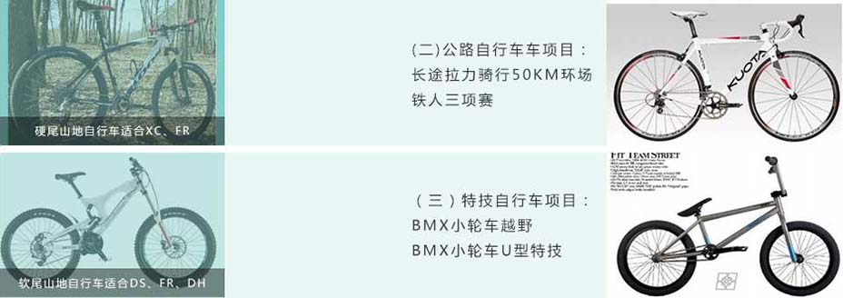
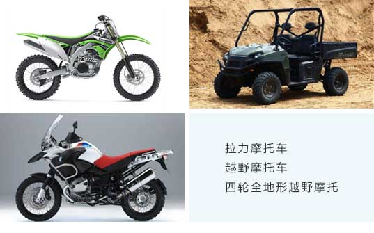

（一）山地自行车项目：
普通越野XC (Cross Country) 50%上坡、50%下坡：用于普通的山地越野，也是山地车中最轻便最实用的车 型，因强度适中，可以追求轻量化。
双人竞速DS (Dual Slalom) 70%上坡、30%下坡：适合竞赛级的高强度越野，但造价过高，都在万元左右。
自由骑FR (Free Ride) 40%上坡、60%下坡：野地丛林里玩，也可以飞台阶，高强度要求，部分装备接近DH。
飞跃DJ (Dirt Jumping) 30%上坡、70%下坡：飞土包的车，腾越空中，需要很重的高强度车架；
速降DH (Down Hill) 0%上坡、100%下坡：从山顶以60公里/时的速度冲下，拥有巨长的双肩前避震器，需要高强度车架，一般造价在3-5万元左右，重心后移，不适合爬坡；又因重量过重，不适合一般的骑行越野。

一、游客休息中心 游客休息中心作用旨在为游客服务，为游客提供休息医疗以及会员卡充值等 服务。同时，设有医疗室，保障游客安全，对应急事件提供医疗保障。
二、游客餐饮中心 游客餐饮中心分为若干区域，同时可接纳团队就餐和散客就餐。有独立酒吧 区以及自助餐区域。同时，在中心外，有加盟入住的农家院可供选择，全部服务消费统一定价， 统一菜品材料，统一服务形式，在开办前要进行服务培训。
三、游客洗浴中心 游客可以在洗浴中心进行自助洗浴，设有桑拿房、理疗房、温泉水泡浴、矿 泉水淋浴。
四、自行车俱乐部品牌商入驻区 经过申请，自行车厂家或者品牌代理商，可以入驻独立区域，风格形式与当 地特色相符，租用我方指定农家院，自主管理，内部装修风格自定。
五、山地自行车、摩托车道
（1）山地自行车道XC、FR级别修整；
（2）越野摩托车山地环道修整
（3）全地形ATV摩托车复杂路面修整
（4）观光徒步、户外运动休息区，绿色采摘通道铺设；
（5）安全监控系统、防火系统、信息管理系统、水处理系统、节电系统、太阳能发电系统、气体降低污染排放系统建设。


Copyright ©360.cn. All Rights Reserved. 京ICP证080047号 技术支持：天作星